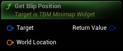

Finds the blip UI position from the specified world location
|
Target
TBM Minimap Widget Object Reference
|
|
|
World Location
Vector (by ref)
|
|
Return Value
Vector 2D Structure
|
Finds the blip UI position from the specified world location |